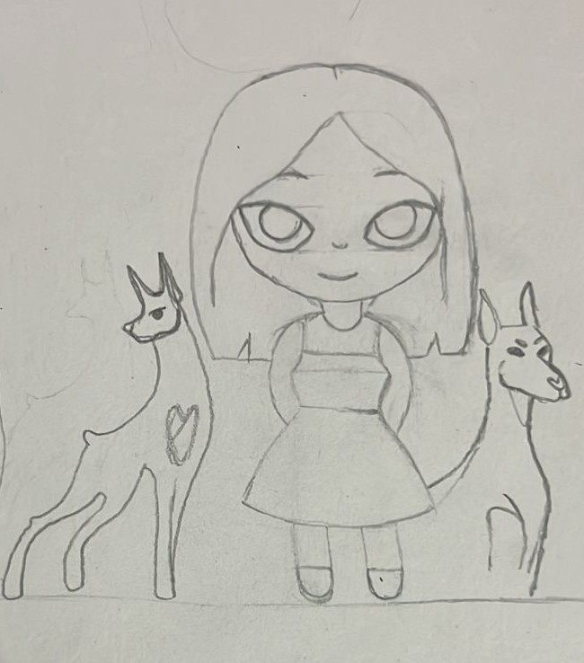
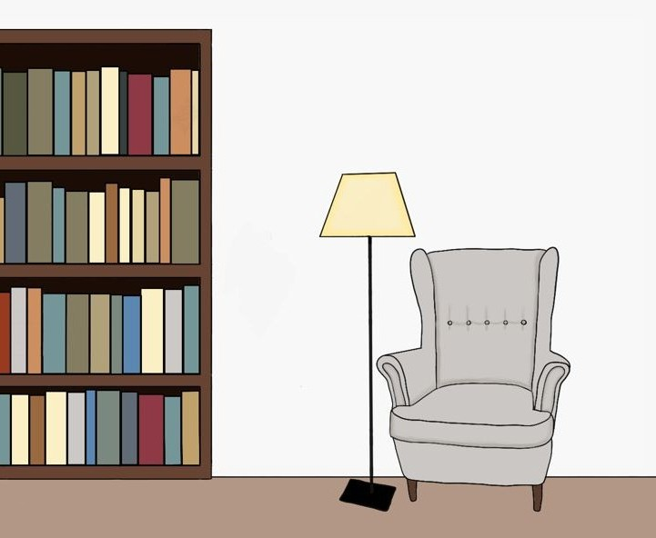
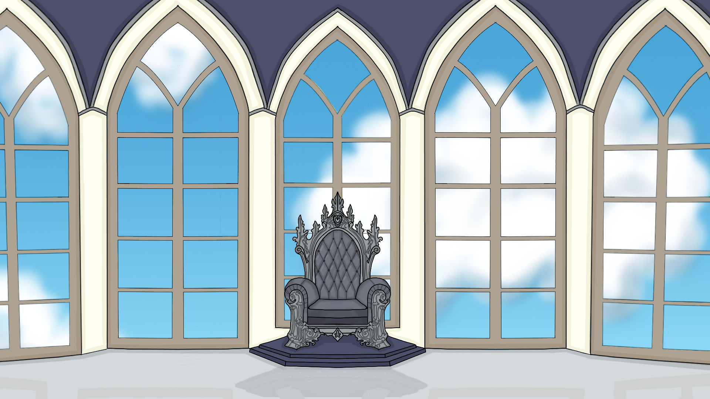
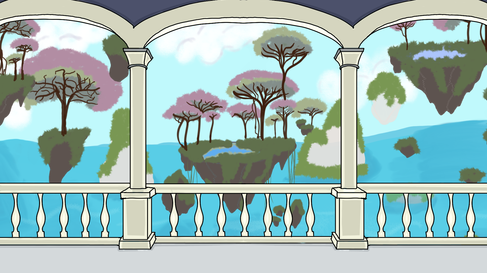
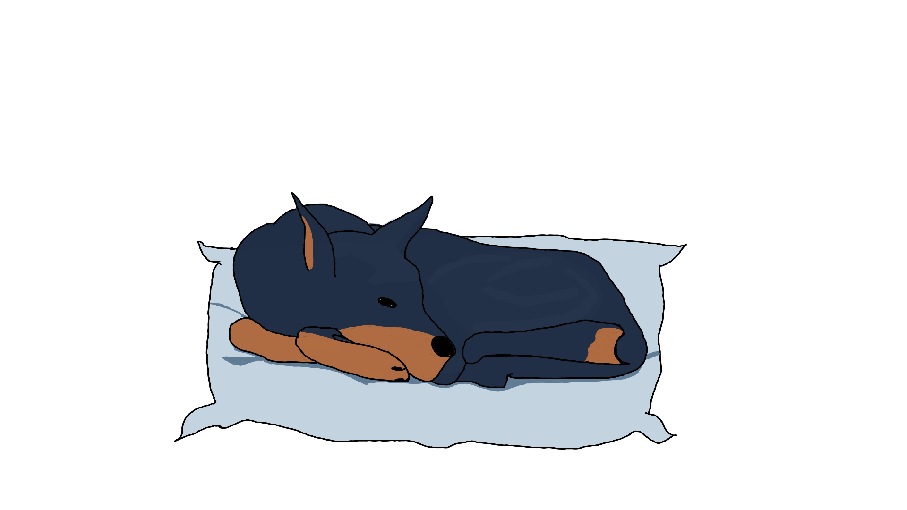
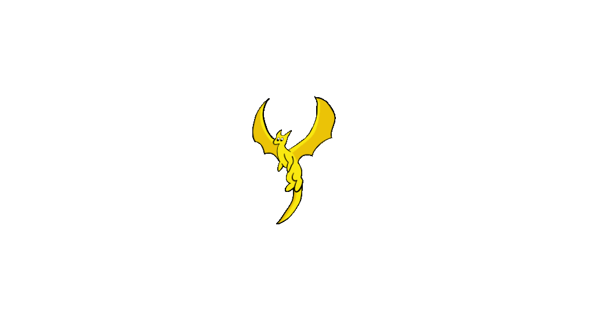
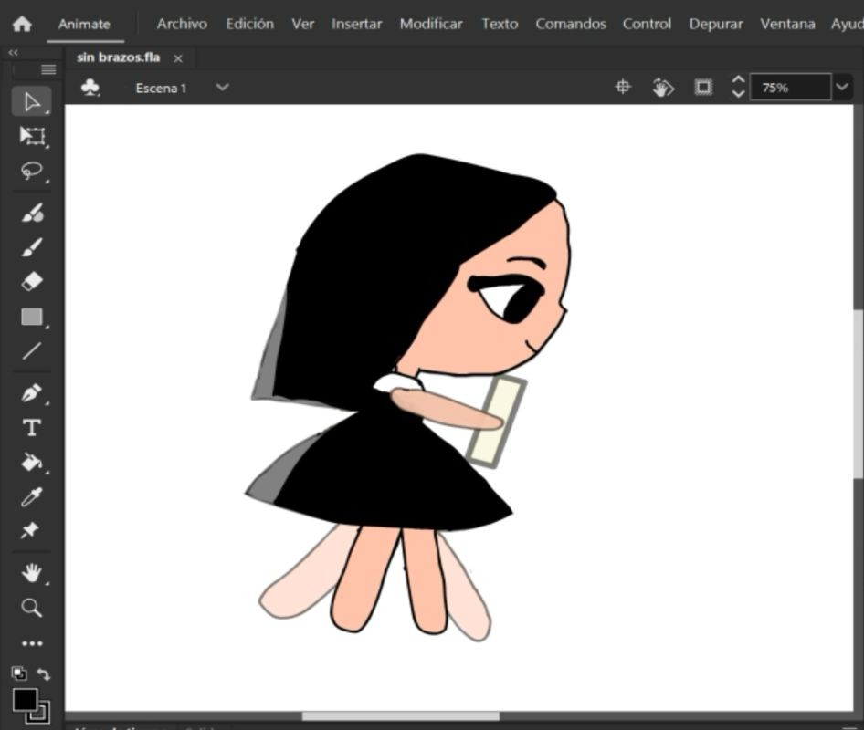
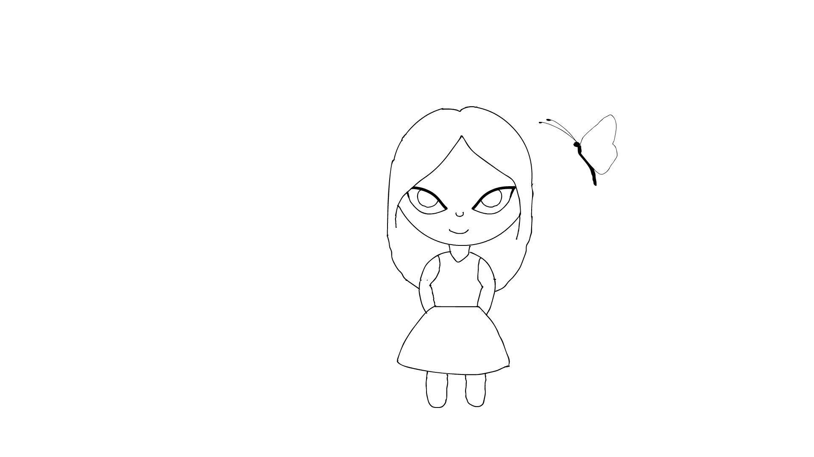

Proyecto de Animación · Karen Silva
A través de las páginas
Un cortometraje animado que nació del amor por la lectura — la magia de transportarse a nuevos mundos e historias cobrada vida.
✦ Karen Silva ✦
Uno de mis hobbies es la lectura. Me encanta ese sentimiento único de
transportarse a nuevos mundos e historias, de vivir aventuras imposibles y conocer
personajes que se quedan contigo para siempre.
De ahí nace «A través de las páginas»: un proyecto de animación 2D que busca
capturar exactamente esa sensación... la de ser lector, la de cruzar al otro lado de
las páginas y encontrarte dentro de la historia.
Todo comenzó con el boceto del personaje principal: una joven lectora de ojos expresivos con un perro y un libro. La personalidad visual se definió desde las primeras líneas a lápiz.
Concept ArtSe construyeron múltiples fondos: la acogedora biblioteca con sillón y lámpara de pie, las ventanas góticas del mundo fantástico y el jardín flotante con arquitectura de otro universo.
Background ArtSe diseñaron criaturas del mundo dentro del libro: un perro oscuro durmiendo sobre un cojín y un dragón dorado surcando las nubes, símbolos de los mundos que la protagonista visita.
Character DesignCon el diseño listo se pasó a animar: los primeros tests mostraron el personaje en movimiento, comprobando fluidez, peso y la expresividad necesaria para transmitir la emoción de la historia.
AnimationLa animación completa integra todos los elementos: personaje, escenarios y criaturas en una narrativa visual que responde a la pregunta ¿cómo se siente ser lector?
Final CutEl origen del personaje: líneas sueltas que capturan la esencia antes de comprometerse con la tinta digital.
↺ ver imagen
El primer escenario, el hogar de la protagonista, lleno de libros y la luz cálida de una lámpara.
↺ ver imagen
Arcos y vitrales del mundo fantástico: la arquitectura etérea que recibe a la lectora al cruzar las páginas.
↺ ver imagen
Tierra suspendida en el aire, jardines que desafían la gravedad: el segundo escenario del mundo imaginario.
↺ ver imagen
Compañero fiel, durmiendo sobre un cojín azul. Símbolo de lealtad y compañía en mundos desconocidos.
↺ ver imagen
Volando entre nubes blancas, representa la majestuosidad de los mundos que solo existen en la imaginación.
↺ ver imagen
La lectora: cabello negro, ojos grandes y expresivos.
↺ ver imagen
Los primeros tests del personaje en movimiento: fluidez, peso y expresividad.
↺ ver imagen
Así siente y ve ser lector para mi. Todo el proceso anterior cobra vida en la animación completa.
▶ Ver animación completa